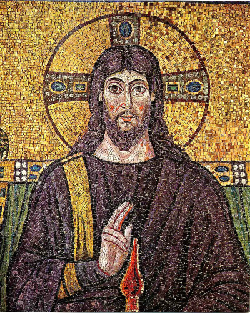

キリスト教の世界観（１．基本）です。
ユダヤ人の歴史、預言者の預言、ユダヤの教え、ダビデへの讃歌が綴られた、古くからユダヤ人が信じてきたユダヤ教と、それに続くキリスト教の聖典。
ダビデが好きなのは良いが、ユダヤ人の神は「自らが悪いとしたことをしている悪人たちには容赦せず報復する」と言うところがある。
自分が創造主だから、悪人も自分に従うべきなのだ、と言うことなのかもしれない。
また、ユダヤ人は都市を人間のように扱うところがある。たまに色んな良い教えが書いてある。ただし、ほとんどは歴史とダビデへの讃歌だ。そんなにダビデが好きなのがありえない。預言者とは神の声を聞いた人間たちのことであり、書いた書物が載っている。未来への予言を行う予言者ではない。
ユダヤ教も参照のこと。

イエス・キリスト。
画像はパブリックドメイン。
自らを「ユダヤ人の神であるメシアとは私のことである」と言った、イエス・キリストの言葉と行いが書かれたキリスト教の聖典。
神は万人に平等であり、ユダヤ人以外の民族や人種であっても、神を信じれば救われると説いた。
内容は、いかに人に接し、生き、信念として何を守るべきか、神は何を求めているか、終末の中で人々はどのように生きるべきか、などが書かれている。
天の御国は近づいた、一番小さな兄弟にしたことはキリストにしたことである、などの言説が有名。
また、死者を復活させたり、弟子に対してどのようにキリストに接するべきかを説いたりする内容が知られている。
古代イスラエルも参照のこと。
キリスト教やユダヤ教の聖典である、聖書を信じることは、決して無駄ではありません。
なぜなら、少なくとも僕自身の体験から言って、聖書を信じることでいいことがあるからです。
僕は、白取春彦さんの超訳 聖書の言葉という本を読んで、聖書の言葉を知りましたが、この内容は、人生において忘れてはならないような「素朴な発想」が書かれていて、素晴らしいものでした。
悪人や愚か者は、本当に頭が馬鹿になっているわけではなく、普通の人間であれば誰でも分かるような、「素朴な善と愛の発想」が分からなくなっています。
聖書を読むと、そのような「素朴な発想」こそ、真に思い出すべきである、ということが分かります。
そして、そのような聖書の言葉を読むと、後で必ずいいことがあります。ユダヤ教の神であるヤハウェは、わたしたち全員の人生を見ることができるぐらい優れた宇宙の主人です。神やキリスト、ユダヤ人の言葉を信じることで、そうした「天に居る神」がわたしたちに奇跡的なよいことを起こしてくれます。少なくとも、わたしはそうでした。
キリスト教の神とは、天地の創造者であり、唯一絶対の宇宙の支配者で、全知全能の存在です。
天地は神によって創造されました。天上にあるものと地上にあるものは、すべて神の被造物です。
わたしたち人間を創造したのは神です。その中には、わたしたちの人生や運命も含まれます。なので、神を信じることで、神の与える正しい人生を生きることができます。
正しい人生を生きるための方法、それは神の教えを信じることです。神の教えとは、新約聖書の中のイエス・キリストの教えです。イエス・キリストの教える「弱者への愛」と「神の平等」を信じることで、わたしたちは罪を赦され、救われます。イエス・キリストは、そのような神の教えを父なる神から授かった「神の子」です。
キリストとは誰か。キリストは神の子です。すなわち、父なる神であるユダヤ教のヤハウェと、聖母マリアの間に生まれた息子です。キリストは神の直系の子孫です。そして、父なる神、子なる神、聖霊の神の合一状態を「三位一体」と呼びます。
神は人間の歴史を支配しているので、神を信じることで運命と奇跡が与えられます。神を信じるものは、すべての罪と罰を赦されるとともに、どんな困難や試練であっても神の力で奇跡的に救済されます。神を信じるとは、神の与える「ロゴス」に自らの未来のすべてを委ねるということです。神を信じるものには、神によって正しい運命が与えられ、死後に天国に逝くことができます。
2026.01.03
これらの教えは、もともとは古代ペルシア帝国の宗教である、ゾロアスター教の教えが元になっています。
| 教え | 説明 |
|---|---|
| 二元論 | 世界の秩序は、神と悪魔の二元論であり、神が歴史を導いている、とする考え方。 |
| 終末論 | 世界には終わりが来る、とする考え方。 |
| 救済論 | 終わりの日には神が民を裁き、善行をしたものは救済される、とする考え方。 |
ゾロアスター教も参照のこと。
神の使いのこと。キリスト教では父なる神（ユダヤ教の神）と子なる神（イエス・キリスト）と聖霊の神（天使）を一体とし、「三位一体」の神を信じている。
神を偶像にすることは禁じられているが、イエス・キリストや天使については、時に聖像にすることが認められる場合がある。これは、父なる神ではないためである。
| 天使 | 解説 |
|---|---|
| ガブリエル、ミカエル、ラファエル、ウリエル | 四大天使。 |
| 加えて、カマエル、ヨフィエル、ザドキエル | 七大天使。他の名前の天使を加える場合もある。 |
| サタン、ルシフェル | 悪魔（デビル）。 |
| メタトロン | 比較的マイナーな天使。 |
ちなみに、キリスト教の絵画などによく登場する小天使（子供の天使）はケルビムと呼ばれる。
宗教も参照のこと。
イエスによる、兄弟と隣人を愛する愛を隣人愛とする。
隣人として生きているこの世界の同じ立場の人々に対する愛ではあるが、転じて「隣国」への愛であるとも言えるかもしれない。人種差別をやめ、相手を憎しまない、という反レイシストの思想は、キリスト教の「相手にやられてもやり返さない」という思想に合致した考え方である。
イエスによる神の愛。無差別で無償の神の愛であり、神の愛が人々を動かして「神の国」をもたらすとされた。
イエスは神の愛を「完璧な存在の愛」であるとし、人々は神と同じになれるように、「神のように完璧であれ」と唱えた。
三位一体とは、父なる神ヤハウェ、子なる神イエス、そして聖霊の神である天使の全てが一体となって神である、という思想です。
実際のところ、聖霊の神が誰なのかが良く分かりませんが、おそらくガブリエルである僕はもし、三位一体の中に加えるのであれば、聖霊の神ということになるでしょう。
キリストの弟子が何を意図してキリストを「主イエス」と言っているか、それは、彼らは天から神あるいは神の子が降臨したのだと信じているからです。
終末では、神が天から降臨し、裁きを与えるとします。裁きの中で善良なものが天国に行き、悪いものは地獄に落とされます。
その神が、古代イスラエルに降臨したのです。
また、聖書の教えからすると、キリストは終末の時代にもう一度降臨します。それは僕ではありません。もう一度イエスが降臨して、神の約束を守ったのか守らなかったのか、全てのものは裁かれるのです。キリストは、裁きが起きる以前に、どのように生きるべきかを神として説いたのです。それが、キリスト教の「終末論」です。
後日注記：2000年経っても、人類はイエス・キリストの言う「正しい生き方」をまったくしていません。このまま行けば地球は環境破壊によって滅びるでしょう。おそらく、本当に取り返しのつかない事態になった時に、イエス・キリストがもう一度降臨するでしょう。そして、終末の裁きの日に、最後に天国へと、キリストとともに善良な人間だけが旅立ち、愚かな悪人たちは地球に残って、最後まで地獄を生きるでしょう。
キリスト教はローマ帝国の国教となって以降、ヨーロッパの白人の宗教の事実上の標準となった。
彼らは教会と呼ばれる、聖職者の神父（プロテスタントでは牧師と呼ぶ）によって、都市から小さな村、そして植民地や未開の地まで、勢力を伸ばした。
時代が中世の封建社会であったこともあって、彼らはヨーロッパ人たちを事実上「神の支配」とした。人々は神に逆らうことができず、神を冒涜するものは処罰された。
教会は力を持ち、たくさんの美麗な教会建築が生まれ、彼らは讃美歌のような宗教音楽を奏でながら、礼拝し、聖書を朗読し、新約聖書の内容を覚えさせられた。
そして、キリスト教の修道士は大切に受け継がれた書物の保管を担当し、また、貧しい人々やマイノリティを助けた。宣教師は、未開の地に出向き、キリスト教を世界中に広めた。
彼らが、本当に善だったのか、あるいは本当に悪だったのかは、分からない。だが、彼らは貧しいものや文字の読めないものを救い、人々を正しい方向に導きながら、この世界の説明を与え、神の愛を受け継いだ。今の、ルネサンスの人文主義（神ではなく人間を中心とする主義）以降の人々には、分からない価値観もある。ダヴィンチが「人間の体を解剖し、それをそのままに人々に教えよ」といったとか、啓蒙主義や民主主義革命を知っている現代人にとっては、「宗教＝悪」となってしまう先入観がある。だが、私たちは、神の説く「正しい生き方」を忘れすぎている。欲望に任せて富を使い捨て、環境をみんなで破壊していくこの世界が、まさにイエスの言った「終末」であることは、教会の正しさをある意味で裏付けている。
キリスト教の良さは、イエス・キリストの説く「善良な教え」にあります。
相手にやられてもやりかえさず、目の見えない人や裸の人のような「弱者」のために助けを与えよ、とするその「無償の愛」の教えは、中世ヨーロッパの普遍的な価値観となり、たくさんの「修道士やシスター」を生み出し、感銘と感動を与えました。
中世ヨーロッパ人は、キリストの教えを受け継いで、王は「王権神授説」によって、王の権力は神に与えられたものであるとしたり、あるいは「神こそ偉大なり」といって、十字軍を率いるなど、多くの良いことも悪いこともしてきましたが、それでも、彼らはキリスト教の愛の教えを信じていました。
時には「弱者の幻想」などといって「禁欲主義のピューリタンの思想だ」といって批判されることもありますが、多くの場合キリスト教は善良です。支配者が偉いのではなく、法律を犯す必要がある時でも、神の教えに従い、人々に善を成し、悪いものに対しても赦しを与えてよいのだ、とする姿勢が、「キリスト教の善良さ」を裏付けています。
キリスト教の大きな特徴が、天国と地獄です。神を信じて善行を行った人間は天国に逝けます。逆に、悪い人間は地獄に落とされます。
こうした教えは、キリスト教だけではなく、仏教でも同じです。善人は極楽浄土に往生できますが、悪人は地獄に堕ちます。
神父と牧師の違いは、神父はカトリック系の聖職者のことで、牧師はプロテスタント系の聖職者のことです。
2025.01.08
「新改訳聖書」より。
“心の貧しい者は幸いです。天の御国はその人たちのものだから。
悲しむ者は幸いです。その人たちは慰められるから。
柔和な者は幸いです。その人たちは地を受け継ぐから。
義に飢え渇く者は幸いです。その人たちは満ち足りるから。
あわれみ深い者は幸いです。その人たちはあわれみを受けるから。
心のきよい者は幸いです。その人たちは神を見るから。
平和をつくる者は幸いです。その人たちは神の子どもと呼ばれるから。
義のために迫害されている者は幸いです。天の御国はその人たちのものだから。
わたしのために人々があなたがたをののしり、迫害し、ありもしないことで悪口を浴びせるとき、あなたがたは幸いです。
喜びなさい。喜びおどりなさい。天ではあなたがたの報いは大きいから。あなたがたより前にいた預言者たちを、人々はそのように迫害したのです。
あなたがたは、地の塩です。もし塩が塩けをなくしたら、何によって塩けをつけるのでしょう。もう何の役にも立たず、外に捨てられて、人々に踏みつけられるだけです。
あなたがたは、世界の光です。山の上にある町は隠れる事ができません。
また、あかりをつけて、それを枡の下に置く者はありません。燭台の上に置きます。そうすれば、家にいる人々全部を照らします。
このように、あなたがたの光を人々の前で輝かせ、人々があなたがたの良い行いを見て、天におられるあなたがたの父をあがめるようにしなさい。”―マタイの福音書 第5章 イエス・キリスト
「新改訳聖書」より。
“『目には目で、歯には歯で』と言われたのを、あなたがたは聞いています。
しかし、わたしはあなたがたに言います。悪い者に手向かってはいけません。あなたの右の頬を打つような者には、左の頬も向けなさい。
あなたを告訴して下着を取ろうとする者には、上着もやりなさい。
あなたに一ミリオン行けと強いるような者とは、いっしょに二ミリオン行きなさい。
求める者には与え、借りようとする者は断らないようにしなさい。
『自分の隣人を愛し、自分の敵を憎め』と言われたのを、あなたがたは聞いています。
しかし、わたしはあなたがたに言います。自分の敵を愛し、迫害する者のために祈りなさい。
それでこそ、天におられるあなたがたの父の子どもになれるのです。天の父は、悪い人にも良い人にも太陽を上らせ、正しい人にも正しくない人にも雨を降らせてくださるからです。
自分を愛してくれる者を愛したからといって、何の報いが受けられるでしょう。取税人でも、同じことをしているではありませんか。
また、自分の兄弟にだけあいさつしたからといって、どれだけまさったことをしたのでしょう。異邦人でも同じことをするではありませんか。
だから、あなたがたは、天の父が完全なように、完全でありなさい。”―マタイの福音書 第5章 イエス・キリスト
「新改訳聖書」より。
“自分の宝を地上にたくわえるのはやめなさい。そこでは虫とさびで、きず物になり、また盗人が穴をあけて盗みます。
自分の宝は、天にたくわえなさい。そこでは、虫もさびもつかず、盗人が穴をあけて盗むこともありません。
あなたの宝のあるところに、あなたの心もあるからです。”―マタイの福音書 第6章 イエス・キリスト
「新改訳聖書」より。
“狭い門から入りなさい。滅びに至る門は大きく、その道は広いからです。そして、そこから入って行く者が多いのです。
いのちに至る門は小さく、その道は狭く、それを見いだす者はまれです。”―マタイの福音書 第7章 イエス・キリスト
「新改訳聖書」より。
“まことに、あなたがたに告げます。あなたがたが、これらのわたしの兄弟たち、しかも最も小さい者たちのひとりにしたのは、わたしにしたのです。”―マタイの福音書 第25章 イエス・キリスト
「新改訳聖書」より。
“初めに、ことばがあった。ことばは神とともにあった。ことばは神であった。
この方は、初めに神とともにおられた。
すべてのものは、この方によって造られた。造られたもので、この方によらずにできたものは一つもない。
この方にいのちがあった。このいのちは人の光であった。
光はやみの中に輝いている。やみはこれに打ち勝たなかった。
神から遣わされたヨハネという人が現れた。”―ヨハネの福音書 第1章
僕がどうでも良いことを言っておくと、このことばとは僕の文章のことである。
ユダヤ人は、僕がこの宇宙を創造した創造主だと勘違いしている。そしてそれは「ロゴス」だとユダヤ人は信じている。
同時に、キリスト教の使徒たちはそれをヨハネだとさらに勘違いしている。キリストの時代、僕はヨハネだと思われている。
「超訳 聖書の言葉（白取春彦）」より。
“愚かな者は、じっくりと考えることをしない。
自分の感情的な思いを言いふらすばかりだ。
彼らは知恵はない。
彼らは、人の言うことをよく聞きもしないで返事をする。
愚かな者の言うことは、
争い、不和、悲しみ、苦しみを呼び寄せる。
彼らは怠け、結局は滅びを招く。
人生は、自分が何をどう言うかによって支配されるものだ。
人生の果実とは、自分の唇が育ててきたものだ。”―格言の書 第18章
聖書は、否定的で悪を懲らしめるところがありますが、その代り、人生の中で本当に悔い改めて信じるべきことが書いてあります。
イエス・キリストの言葉に、「食べ飽きているものは必ず飢える」という言葉があります。
「新改訳聖書」より。
“いま飢えている者は幸いです。やがてあなたがたは満ち足りるから。”
“いま食べ飽きているあなたがたは哀れです。やがて飢えるようになるから。”―ルカの福音書 第6章
信じたくないかもしれませんが、これは真実です。飢えているものはやがて神を信じることによって満ち足りるようになり、食べ飽きている者はやがて神を信じないことによって飢えるようになるのです。
また、僕が好きなのは以下の一節です。
「新改訳聖書」より。
“良い人は、その心の良い倉から良い物を出し、悪い人は、悪い倉から悪い物を出します。なぜなら人の口は、心に満ちているものを話すからです。”―ルカの福音書 第6章
キリストの言う通り、心の中の良い倉から良い物を出すことを、常に心掛けて生きるようにしましょう。
2025.01.08
バチカンにローマ法王の総本山を置く、古くからのキリスト教の宗派。
イタリア、フランス、スペインなどがこれに当たる。南米にも信者が多い。
古代ローマも参照のこと。
ルターによる宗教改革で生まれたキリスト教の新しい宗派。
イギリス（イギリス国教会）、アメリカ、ドイツ（カトリックとプロテスタントが地域で分かれる）、そしてスイスのカルヴァン派がこれに当たる。
東方正教会。ギリシャ（ギリシャ正教）やロシア（ロシア正教）などがある。
キリスト教から派生した新興宗教として、アメリカのモルモン教などがある。
僕は、キリスト教の教会に何度か行ったことがあります。
当時、僕は自分が神ではないかと信じていたおかしな人間でした。特にそうしたことを話したわけではありませんが、僕のような引き篭もりにも優しくしてくれて、とてもうれしかったです。
イースターのお祝いの際には、みんなと一緒に祈りをささげて、聖書を朗読し、讃美歌を歌いました。
その後、教会には行かなくなりましたが、僕は今でも神を信じています。今はもうキリスト教徒ではないものの、神の下の平等というものが何なのか良く分かりました。
キリスト教の大きな特徴として、日本人の信じている仏教あるいは神道と矛盾しない、というのがあります。
キリスト教ではイエス・キリストが神で、仏教ではブッダが仏である、というだけで、神の善良な愛も、仏の悟りに繋がる生き方や考え方も、全く矛盾しません。
それどころか、キリスト教を信じることが「善良さ」に繋がり、その善良さが菩薩や八正道のような「仏への道」に繋がるのです。
僕は、神道も信じていないわけではありませんし、仏教やキリスト教も同時に信じています。これがキリスト教徒や仏教徒の間で許されるかどうかは分かりませんが、少なくとも、僕は悪いとは言いません。どんどんキリストの神と仏教の仏を信じてもらって構いません。そもそも、キリスト教はユダヤ教と兄弟ですし、仏教も神道と家族のようなものです。これら4つの宗教を一緒にして、新しい宗教を作れば良いのです。
仏教も参照のこと。
僕は、頭の中にキリストが生まれている。
キリスト教を信じると、このように、頭の中にキリストが生まれて、そのキリストが永遠に自分と対話するようになる。
キリストは、いつでも愛を教える。この愛には、全知全能の全ての知識と経験がある。
宗教とはそもそも、こういうものである。神を信じる者は誰でもこうなる。
そういうわけで、頭の中に生まれたキリストを殺せばいい。そのためには、こう言ってしまえば良い。「キリストや聖書の神は僕の神ではない」と言えばいい。
そう、僕の神は、ユダヤ人やキリスト教の神ではない。もちろんイスラム教でもない。僕の神は僕の神であり、それらとは違うのである。そのように考えればキリストはすぐに居なくなる。
キリストなんかを信じない方が良い。キリストは正しい生き方を説いているが、イエス自身は全く正しい人生ではない。あのように悪魔を恨むのはおかしい。弟子や人々への話も、多くがおかしい。
キリスト教について、簡単に否定するならば、「ただのカルト宗教」であると言えます。
イエス・キリストという開祖を、みんなで信じているだけです。
イエスが神であり、イエスの弟子は聖人です。キリスト教は、ヨーロッパでは「善良な宗教」と言われますが、ただのカルトにすぎません。元祖カルト宗教です。
また、僕の信じた神はキリスト教の神ではありません。全く別個の宗教、全く別の神です。
世界は、一度、ユダヤ人の言う「恐ろしくてひとりしかいない神」を改める必要があると思います。僕はもっと優しくて、友達のような神を作りました。
僕は、むしろ、ユダヤ教やキリスト教の神を否定する必要はないと思います。同時に信じれば良いのです。イエスも神で、僕も神。それで良いのです。父なる神は旧約聖書で、子なる神はイエスで、そして聖霊の神は僕です。三位一体はここに完成したのです。
2019-05-07に関連する内容があります。
イエス・キリストの創始した宗教。現在では、カトリックとプロテスタント（ルター派、カルヴァン派、イギリス国教会など）と東欧正教会が中心です。
Wikipedia
書籍
聖書